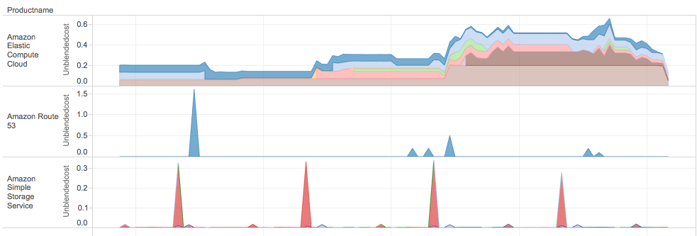

Nucleator Resource Tagging
AWS "User Tags" can be useful for utilization and cost analysis on your account. This information is most easily located in your detailed billing report and 47Lining strongly advises that everyone should enable detailed billing reporting for their accounts. From these reports great insight can be gain into your account spend and utilization if a judicious use of user tags is implemented. 47Lining has such a user tag use model and it have influenced the design of Nucleator.
Nucleator uses and relies upon user tags for assets under its control to enable discovery of these assets at a later date. The tags used for this purpose should never be changed or deleted by individuals or programs other than Nucleator. Modification of these tags will cause incorrect behavior of Nucleator. The user tags used for this purpose are:
- NucleatorCustomer
- NucleatorCage
- NucleatorGroup
- NucleatorStackset
- NucleatorStacksetInstance
In addition to these "must have" tags Nucleator also adds user tags for user readability and billing report understanding. These tags are:
- Owner – Identifier of the business-relevant principal (typically a user or role) that created / owns the asset
- Name – A unique name of the asset
Within 47Lining we have established a best practice of using linked AWS accounts and having additional user tags to categorize AWS asset charges for business level reporting of cost and utilization. These business level designations apply to Nucleator and non-Nucleator AWS infrastructure to allow for a consolidated view of AWS utilization. The business level identifiers, user tags and account allocation, are used to indicate the following business relevant information:
- Linked account – Indicates the Business unit or department responsible for these assets
- Offering – User Tag: Identifies the product, product line, development project, marketing campaign, or other other top level business purpose for the AWS infrastructure
- Purpose – User Tag: Identifies the (orthogonal to Offering) purposes for the infrastructure. These include types such as environment (production, demo, dev, test), business process step (orders, front-end, fulfillment), class of materials (public materials, campaign operations, crm), etc.
Due to user tag limits at AWS the Offering and Purpose tags are not created by Nucleator. 47Lining post-processes detailed usage reports to create these user tags algorithmically and if you would also desire to have business level meaning dirived from Nucleator user tags care should be taken in naming your Nucleator customer, group and cage values. We use the following algorithm to generate Offering and Purpose within our operations.
- Offering = NucleatorCustomer
- Purpose = NuleatorGroup+"–"+NucleatorCage
In this way Nucleator infrastructure can be organized in combination with general AWS infrastructure producing valuable usage and cost reporting assets. The following example shows hourly AWS billing for Nucleator and non-Nucleator assets organized by AWS product and Offering:

Future versions of Nucleator will have utilization and cost reporting tools integrated so that full understanding of AWS asset use can be achieved.